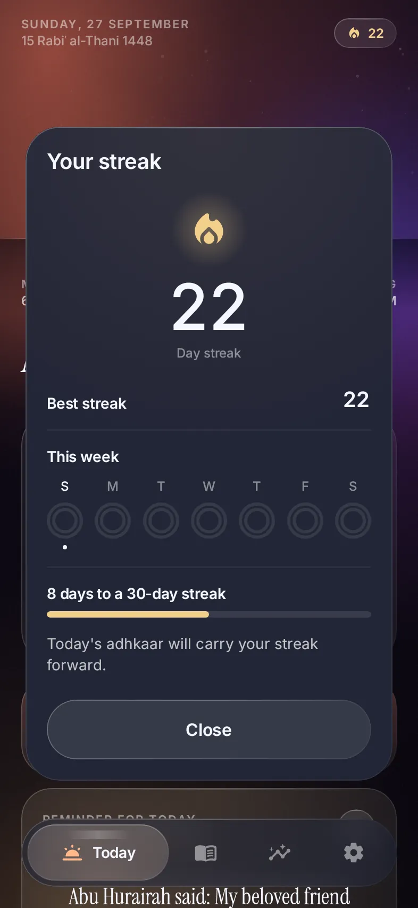

Consistency
22
days in a row.
Don't let today be the gap.
Every finished morning and evening adds to your streak and your month.

Free for AndroidMorning and evening adhkaar, on time.
Every finished morning and evening adds to your streak and your month.
